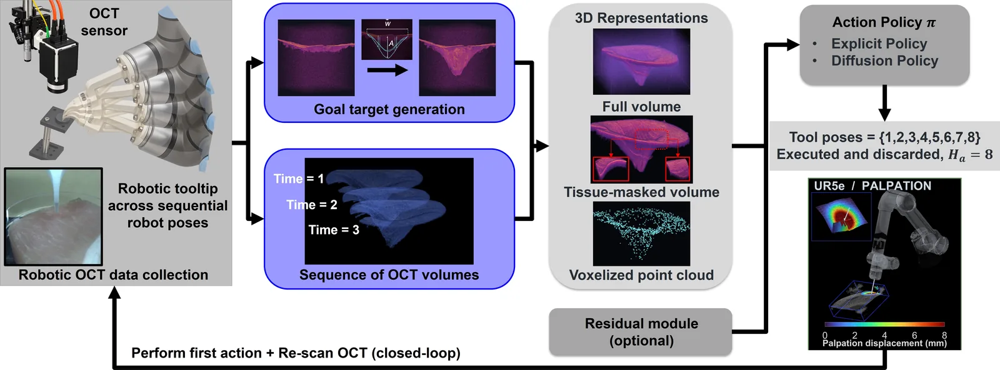
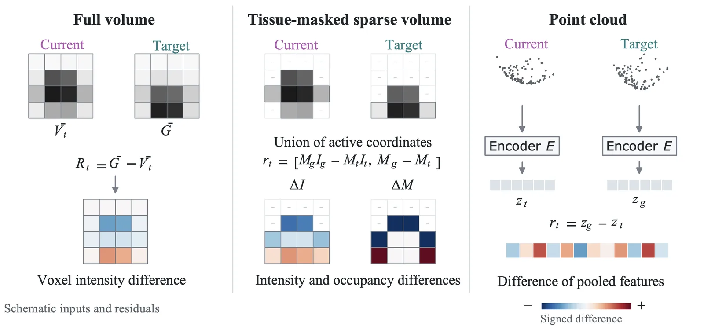
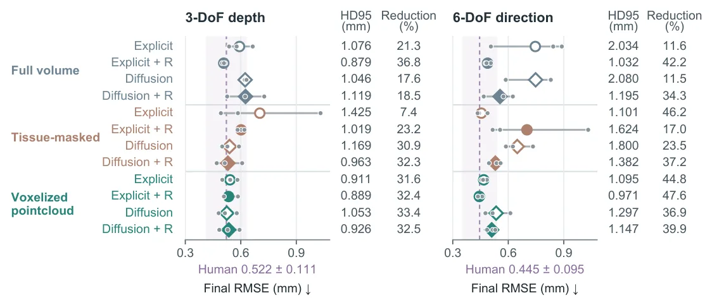
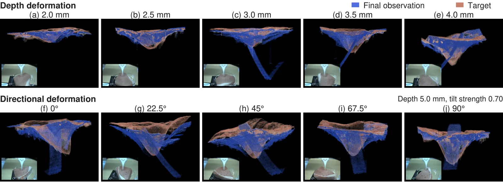

O Desafio do Controle de Tecidos Moles em Microescala
Na robótica médica, manipular tecidos moles em microescala é um problema complexo. Diferente de objetos rígidos, tecidos se deformam de forma não linear e imprevisível. O objetivo do controle não é apenas mover uma ferramenta para uma posição específica, mas induzir uma deformação específica no tecido. Isso requer interações físicas sequenciais: o robô empurra, observa a resposta, ajusta e empurra novamente. Em escalas pequenas, essa deformação localizada é difícil de observar e representar com precisão.
Modelos baseados em física tradicionais, que tentam simular o comportamento mecânico do tecido, são frequentemente caros computacionalmente e difíceis de adaptar a ambientes biológicos reais, que variam muito de paciente para paciente. Por outro lado, abordagens puramente baseadas em dados exigem representações eficazes tanto do estado atual do tecido quanto do estado desejado (o alvo). Sem uma boa representação 3D, o robô não sabe exatamente onde está nem para onde precisa ir.
A Tomografia de Coerência Óptica (OCT) surge como uma solução promissora. Diferente de câmeras tradicionais que capturam apenas a superfície, a OCT fornece percepção volumétrica de alta resolução, mostrando tanto a morfologia da superfície quanto a estrutura subsuperficial do tecido. Isso permite que o sistema capture a deformação interna em 3D, essencial para o controle preciso de forma. O desafio, então, é transformar esses dados volumétricos brutos em uma representação que uma política de aprendizado de máquina possa usar para prever movimentos.
Neste trabalho, pesquisadores da Universidade de Michigan propõem um framework guiado por OCT para controle de forma de tecido. Eles não criam um novo modelo físico, mas sim um sistema de aprendizado baseado em demonstrações humanas. O robô aprende a deformar o tecido observando volumes OCT e comparando o estado atual com um alvo gerado parametricamente. O sistema opera em loop fechado: o robô age, o OCT escaneia, o modelo atualiza a representação e decide a próxima ação.

Representações 3D e Condicionamento Residual
O cerne deste paper é a escolha de como representar o estado do tecido e o alvo para a política de controle. Os autores investigam três tipos principais de representações derivadas dos volumes OCT: volumes completos (full-volume), volumes esparsos mascarados pelo tecido (tissue-masked sparse-volume) e nuvens de pontos voxelizadas (voxelized point-cloud). Cada uma tem trade-offs entre densidade de informação e eficiência computacional.
Além da representação bruta, o sistema utiliza o que chamam de 'condicionamento residual'. Em vez de apenas fornecer o estado atual e o estado alvo como entradas separadas, o modelo calcula a diferença entre eles. Para volumes completos, isso é feito voxel por voxel, comparando as intensidades. Para volumes mascarados, compara-se intensidade e ocupação nas coordenadas ocupadas. Para nuvens de pontos, usa-se diferenças de características agrupadas (pooled feature differences). Essa abordagem residual ajuda a política a focar no erro a ser corrigido, em vez de aprender a mapear dois estados absolutos complexos.
A figura 2 ilustra como esses resíduos são calculados. A ideia é simplificar a tarefa de aprendizado. Se o robô sabe que precisa reduzir a diferença entre o tecido atual e o alvo, ele pode focar em movimentos incrementais que minimizem essa diferença. Isso é particularmente importante em controle de loop fechado, onde cada passo deve ser pequeno e preciso para evitar danos ao tecido ou oscilações no controle.
As representações não são apenas dados brutos; elas são estruturadas para serem consumidas por modelos de ação. Os autores testam se a riqueza da informação volumétrica completa vale o custo computacional, ou se representações mais esparsas, como nuvens de pontos, são suficientes para alcançar alta precisão. A hipótese é que a estrutura espacial preservada no OCT permite que representações mais leves ainda capturem a geometria essencial da deformação.

Políticas de Ação: Determinísticas vs. Generativas
Com as representações definidas, os autores precisam de um 'cérebro' para decidir os movimentos. Eles comparam duas categorias de políticas: determinísticas (chamadas de 'Explicit') e generativas (chamadas de 'Diffusion'). As políticas determinísticas aprendem um mapeamento direto do estado para a ação, prevendo o movimento incremental de 6 graus de liberdade (6-DoF) da ponta da ferramenta. É como um controlador PID aprendido, rápido e direto.
As políticas Diffusion, por outro lado, são baseadas em modelos de difusão, uma classe de modelos generativos que têm mostrado excelente desempenho em robótica. Elas aprendem a distribuir de ações possíveis e amostram a melhor ação iterativamente. Embora sejam computacionalmente mais pesadas, elas podem lidar melhor com ambiguidades e multimodalidade (situações onde múltiplas ações levam a resultados semelhantes). O paper testa se a complexidade extra do Diffusion vale a pena comparado ao Explicit mais simples.
A combinação de representações (3 tipos) e políticas (2 tipos), com e sem condicionamento residual, resulta em 12 configurações diferentes testadas. Isso permite uma análise granular: por exemplo, o Diffusion com volume completo e residual funciona melhor que o Explicit com nuvem de pontos? Ou a simplicidade da nuvem de pontos supera a complexidade do volume completo?
O objetivo final é prever movimentos incrementais. Em cada passo do loop fechado, o robô executa uma ação, o OCT escaneia o novo estado, e a política recalcula o próximo movimento. Essa iteração contínua é o que permite a adaptação a deformações não previstas. Se o tecido reagir de forma diferente do esperado, o próximo scan atualizará a representação e a política ajustará o curso.
Resultados em Fantomas: Precisão e Robustez
Os experimentos foram realizados primeiro em fantomas (materiais sintéticos que simulam tecido) usando um robô com 3 graus de liberdade de profundidade e 6 de direção. Foram realizadas 576 simulações (rollouts) para avaliar as 12 configurações. A métrica principal foi o Erro Quadrático Médio da Forma (Shape RMSE), que mede a distância média entre a superfície final do tecido deformado e o alvo desejado.
Os resultados mostram que o condicionamento residual é crucial. Para a política Diffusion com volume completo, o uso de residual reduziu o RMSE direcional de 0.748 mm para 0.555 mm. Isso confirma que indicar o 'erro' diretamente ajuda o modelo a convergir mais rápido e com mais precisão. No entanto, a melhor performance geral veio de uma combinação inesperada: a política Explicit (determinística) com nuvem de pontos voxelizada e residual.
A configuração Explicit com nuvem de pontos e residual atingiu um RMSE de 0.534 mm para controle de profundidade e 0.443 mm para controle direcional. Esses números são competitivos e, em alguns casos, superiores às abordagens mais complexas. Isso sugere que, para este tipo de tarefa, a eficiência da nuvem de pontos combinada com a robustez do modelo determinístico é suficiente, sem necessidade dos custos computacionais do Diffusion.
Além da precisão média, os autores avaliaram a robustez em alvos intermediários não vistos durante o treinamento. O sistema conseguiu generalizar bem, mantendo precisão comparável. Isso é importante porque, na prática, o robô precisará lidar com formas alvo que não foram exatamente demonstradas por um humano. A capacidade de generalizar para alvos intermediários indica que a política aprendeu princípios geométricos de deformação, não apenas memorizou trajetórias.

Validação em Tecido Biológico Ex Vivo
Para validar que os resultados em fantomas se traduzem para o mundo real, os autores realizaram 60 experimentos em tecido de porco ex vivo. O tecido biológico é muito mais heterogêneo e imprevisível que os fantomas, com variações locais de densidade e elasticidade. O objetivo era ver se o framework, treinado em demonstrações humanas em fantomas, conseguia controlar a forma em tecido real.
Os resultados em tecido ex vivo foram promissores. Os erros geométricos finais foram comparáveis aos das demonstrações humanas. Isso significa que o robô, aprendendo com humanos em um ambiente simulado, conseguiu imitar a precisão humana em tecido real. A figura 16 mostra exemplos visuais onde a forma final (azul) se alinha bem com o alvo (marrom) em diferentes profundidades e inclinações.
É importante notar que o treinamento foi feito em fantomas, mas a inferência foi feita em tecido biológico. Isso demonstra a transferência de domínio da abordagem. A representação volumétrica do OCT parece ser robusta o suficiente para capturar as características geométricas essenciais, independentemente das diferenças sutis nas propriedades materiais entre fantoma e tecido real.
Essa validação ex vivo é um passo crítico. Muitos sistemas de robótica médica falham na transição do laboratório para o ambiente biológico. O fato de o sistema manter a precisão sugere que a percepção volumétrica do OCT compensa as incertezas do modelo, permitindo correções em tempo real que um modelo puramente baseado em simulação não conseguiria.

Conclusão: O Papel da Representação Volumétrica
Este trabalho estabelece que a percepção volumétrica via OCT é uma base viável para controle de forma de tecido em robótica. A contribuição principal não é um novo algoritmo de controle, mas uma comparação sistemática de como representar dados volumétricos para aprendizado de máquina. A conclusão é que representações esparsas, como nuvens de pontos voxelizadas, combinadas com condicionamento residual, oferecem a melhor relação entre precisão e complexidade.
O framework proposto permite que robôs aprendam a manipular tecidos de forma data-driven, reduzindo a dependência de modelos físicos precisos. Ao usar demonstrações humanas e feedback visual volumétrico, o sistema pode generalizar para novos alvos e tecidos. Isso abre caminho para intervenções minimamente invasivas mais precisas, onde o controle de forma é tão importante quanto a posição da ferramenta.
Embora o paper não resolva todos os desafios da cirurgia robótica, ele fornece um bloco de construção essencial: uma maneira eficaz de traduzir imagens médicas 3D em ações robóticas precisas. A combinação de OCT, representações inteligentes e políticas de aprendizado de máquina mostra potencial para automatizar tarefas de manipulação de tecidos que hoje dependem exclusivamente da habilidade manual do cirurgião.
O que fica
- O sistema usa OCT para obter volumes 3D em tempo real, superando a limitação de modelos físicos computacionalmente caros.
- A comparação entre políticas determinísticas e generativas mostra que nuvens de pontos voxelizadas com condicionamento residual têm melhor precisão.
- Testes em fantomas e tecido ex vivo validam a abordagem, alcançando erros geométricos comparáveis a demonstrações humanas.
Paper original: Robotic Optical Coherence Tomography-Guided Geometric Modeling of Soft Tissue: 3D Representations for Data-Driven Closed-Loop Shape Control
Comentários
Nenhum comentário ainda. Seja o primeiro.